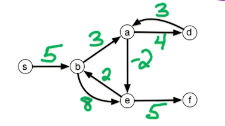
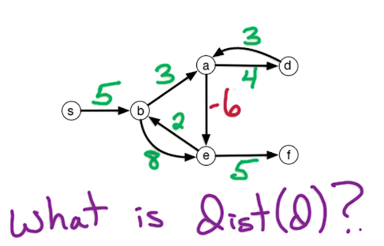
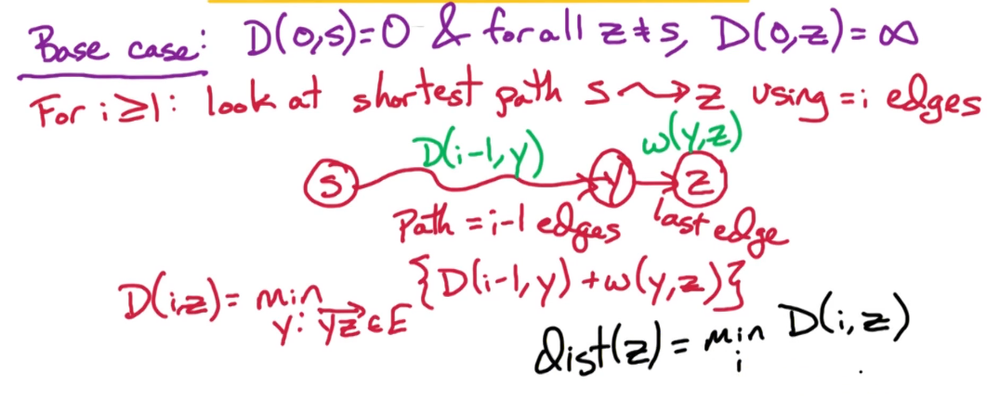
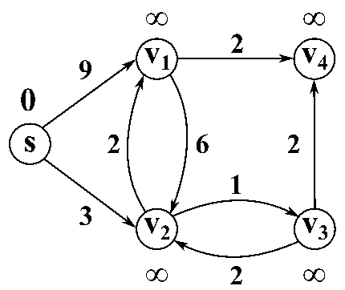
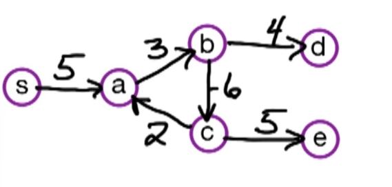
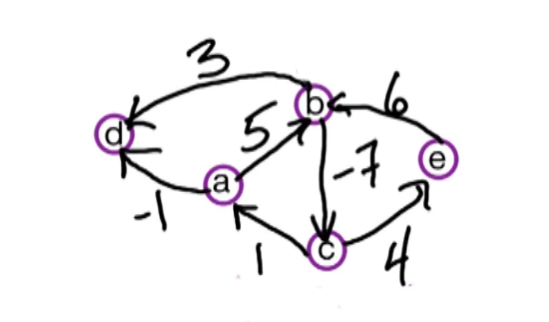

Week 4 — DP Shortest Paths + Graph Intro (SCC, 2-SAT)
2026-06-08 → 06-14 · Modules DP3 (Shortest Paths), GR1 (SCC), GR2 (2-SAT)
◀ W03 Median · All weeks · Index · W05 MST ▶
EXAM 1 this week
| Opens | Thu 06-11 10am ET |
| Closes | Mon 06-15 8am ET |
| Covers | Weeks 1–3 — DP1–DP2, DC1–DC3 |
Watch the lecture (DP & Graph Intro)
Learning objectives
- Run DFS, compute pre/post numbers, classify the four edge types, detect cycles, topologically sort.
- Find SCCs with the two-pass algorithm and explain why graph reversal works.
- Build a 2-SAT implication graph and decide satisfiability via SCCs.
- Choose the right shortest-path DP (Bellman-Ford / Floyd-Warshall / DAG) for weights and structure.
Core concepts
DFS and pre/post numbers — the graph foundation
Definition. DFS stamps each vertex with a pre number (when first visited) and a post number (when finished). These intervals nest like parentheses.
- Topological sort (DAGs only): order vertices by decreasing post number.
- Cycle ⟺ a back edge exists — an edge (u, v) to an ancestor, i.e.
with
post[u] < post[v]. - Four edge types (directed DFS): tree, back (to ancestor → cycle), forward (to descendant), cross (between subtrees).
Strongly Connected Components (GR1)
Definition. u ∼ v iff u reaches v and v reaches u. SCCs partition V; the metagraph (contract each SCC) is always a DAG. Intuition: SCCs are the "two-way reachable" blobs; between blobs reachability is one-way.
- Source lemma: the vertex with the highest post number (in DFS on GR) lies in a sink SCC of G. Peeling sink SCCs in that order isolates one SCC per DFS tree.
2-SAT (GR2)
Definition. Decide a 2-CNF formula (each clause has 2 literals). Build the implication graph on 2n literal vertices: clause (a ∨ b) adds the two implications ¬a ⇒ b and ¬b ⇒ a. Satisfiability criterion: f satisfiable ⇔ ∀i, xi and ¬xi lie in different SCCs. Intuition: if xi and ¬xi are mutually reachable, the clauses force xi ⇒ ¬xi and back — a contradiction.
Shortest paths as DP (DP3)
Bellman-Ford — DP over number of edges. Let dist(k)(v) = shortest s → v path using ≤ k edges: dist(k)(v) = min (dist(k − 1)(v), min(u, v) ∈ E dist(k − 1)(u) + w(u, v)).
- Run k = 1…n − 1. A further decrease at k = n means a negative cycle. Runtime O(nm).
Algorithms
SCC decomposition (two-pass) — O(n + m)
- Run DFS on the reverse graph GR; record post numbers.
- Process vertices of G in decreasing GR post order; each new DFS tree in G is one SCC.
2-SAT solver — O(n + m)
- Build the implication graph (2 implications per clause).
- Compute SCCs.
- If any xi, ¬xi share an SCC → UNSAT.
- Else assign each variable by reverse topological SCC order (later SCC = true).
Shortest-path chooser
| Algorithm | Graph | Negative weights | Runtime |
|---|---|---|---|
| BFS | unweighted | — | O(n + m) |
| Dijkstra | non-negative weights | no | O((n + m)log n) |
| Bellman-Ford (DP) | general, detects neg cycles | yes | O(nm) |
| Floyd-Warshall (DP) | all-pairs | yes (no neg cycle) | O(n3) |
| DAG shortest path | DAG | yes | O(n + m) (topo order) |
Key theorems & results
- Cycle ⟺ back edge. DFS on G has a back edge iff G has a directed cycle.
- Metagraph is a DAG. Contracting SCCs never creates a cycle (else the blobs would merge).
- 2-SAT lemma. f is satisfiable iff no variable shares an SCC with its negation; assignment by reverse-topo SCC order is consistent.
Worked example — SCC ordering
Graph A → B → C → A (one SCC {A, B, C}) plus C → D, D a sink.
- GR: A → C → B → A, D → C. DFS on GR gives highest post in {A, B, C} (a source SCC of GR = sink-side of G).
- Processing G by decreasing GR post peels {A, B, C} first as one tree, then {D}. Metagraph: {A, B, C} → {D} — a DAG.
Common pitfalls / exam traps
- Sorting by increasing post for topo order (it is decreasing).
- Reducing graph problems by rewriting a black box's internals — instead transform input/output.
- Using Dijkstra with negative weights (invalid) — switch to Bellman-Ford.
- In 2-SAT, forgetting both implications per clause, or mis-assigning truth (later SCC in topo order = true).
How to answer (HW / exam)
Graph problems = transform input/output around a black box (DFS, SCC, BFS, Dijkstra). Don't rewrite the black box. See graph guidance · usable black boxes.
Go deeper — readings · guidance · deep notes
- DPV §3.1–3.4 (graphs) · §4.x (paths) · §6.x (DP shortest path)
- Graph guidance · Black boxes · DP guidance
- Deep notes: GR0 fundamentals · GR1 SCC · GR2 2-SAT · cheat sheet
- lectures/ · transcripts/ · readings/ · guidance/ · notes/
Comprehensive Notes
Full lecture notes for this week's modules (DP3 shortest paths, GR0 graph foundations, GR1 SCCs, GR2 2-SAT), with figures and diagrams inline.
GR0 — Graph Fundamentals
Graph. G = (V, E): vertices V and edges E connecting pairs. Undirected edges are unordered {u, v}; directed edges are ordered (u, v) (so A → B does not imply B → A). We assume simple graphs (no self-loops, no parallel edges).
| Term | Definition |
|---|---|
| Degree deg (v) | number of incident edges; in-/out-degree for directed |
| Path / Cycle | sequence of edges; cycle returns to start |
| Connected (undirected) | a path between every pair |
| Strongly connected (directed) | for every u, v: paths u → v and v → u |
| DAG | directed acyclic graph |
| Source / Sink | in-degree 0 / out-degree 0 |
Representations. Adjacency matrix: O(n2) space, O(1) edge lookup, O(n) to list neighbors. Adjacency list: O(n + m) space, O(deg ) lookup/iterate. This course uses adjacency lists (most graphs are sparse).
BFS explores level by level and finds shortest paths in unweighted graphs, O(n + m):

BFS(G, s):
for all v: dist[v] = ∞; prev[v] = null
dist[s] = 0; Q = queue containing s
while Q not empty:
v = dequeue(Q)
for all (v,w) ∈ E:
if dist[w] = ∞:
dist[w] = dist[v] + 1; prev[w] = v; enqueue(Q, w)Dijkstra = BFS for positive-weighted graphs, O((|V|+|E|)log |V|) with a min-heap; it fails on negative weights (use Bellman-Ford). Key facts: any subpath of a shortest path is shortest; triangle inequality dist (u, v) ≤ dist (u, x) + dist (x, v).
DFS explores as deep as possible, backtracking — the
foundation for SCCs, topological sort, and cycle detection. For directed
graphs add a clock recording pre
(discovery) and post (completion):
Explore(z):
pre[z] = clock++; visited[z] = true
for all (z,w) ∈ E:
if not visited[w]: Explore(w)
post[z] = clock++Pre/post intervals nest: if [pre(u), post(u)] contains [pre(v), post(v)] then u is an ancestor of v; disjoint intervals mean neither is an ancestor.
Edge types (directed DFS): tree, back (descendant→ancestor, the only type with post(z) < post(w)), forward, cross.
Theorem (cycle). G has a cycle ⇔ its DFS tree has a back edge.
(→) the edge into the first-visited cycle vertex is a back edge; (←) a back edge v → w plus the tree path w ⇝ v forms a cycle.
Topological sort (DAGs only): run DFS, output vertices by decreasing post number, O(n + m). Works because a DAG has no back edges, so every edge u → v has post(u) > post(v).
GR1 — Strongly Connected Components
SCC. A maximal set of mutually strongly connected vertices (v ⇝ w and w ⇝ v for all pairs).
graph LR
subgraph SCC1["SCC: A,B,E"]
A --> B
B --> E
E --> A
end
subgraph SCC2["SCC: C,D"]
C --> D
D --> C
end
subgraph SCC3["SCC: F"]
F
end
B --> C
D --> F
E --> FMetagraph. Collapse each SCC to a meta-vertex: the result is always a DAG (a cycle between two SCCs would merge them).
Goal: find all SCCs in O(n + m).
Key insight. Running
Explore(v)from a vertex in a sink SCC visits exactly that SCC — there are no outgoing metagraph edges to escape through. So: find a sink-SCC vertex, Explore it, remove it, repeat.
Finding a sink SCC. We can't directly find a sink, but the vertex with the highest post number after DFS lies in a source SCC. Trick: run DFS on the reverse graph GR (ER = {(w, v) : (v, w) ∈ E}) — SCCs are unchanged but sources and sinks swap, so the highest-post vertex in GR is in a source SCC of GR = sink SCC of G.
SCC algorithm (O(n + m)):
SCC(G):
1. Construct G^R (reverse all edges)
2. Run DFS(G^R) — compute post numbers
3. Order vertices by decreasing post number
4. Run DFS(G) in that order — each outer Explore call labels a new SCCWorked example. G: A → B, B → A, B → C, C → D, D → C, D → E (SCCs {A, B}, {C, D}, {E}, with {A, B} → {C, D} → {E}). DFS on GR gives posts E(8), C(6), D(5), A(3), B(2). Processing G in decreasing-post order E, C, D, A, B:
Explore(E)→ {E} (sink SCC),Explore(C)→ C, D → {C, D},Explore(A)→ A, B → {A, B}.
SCCs emerge sink-first (reverse topological order).
Why it works (lemma). In DFS on GR, the highest-post vertex lies in a source SCC of GR (= sink SCC of G). For SCCs S, S′ with S′ → S in GR's metagraph: whichever is entered first by DFS, all of S finishes with a higher max-post than S′. So the globally-highest-post SCC is a source of GR.
GR2 — 2-Satisfiability
SAT / CNF. Boolean variables x1, …, xn; literals xi and x̄i. A CNF formula is an AND of OR-clauses; a satisfying assignment makes ≥ 1 literal true in every clause. k-SAT caps clause size at k: k = 2 is polynomial (O(n + m) via SCCs); k ≥ 3 is NP-complete — one of the most important complexity boundaries.
Implication graph. Each clause (α ∨ β) becomes two implications: if α is false then β must be true (ᾱ → β), and β̄ → α. Build 2n literal vertices and 2m edges:
| Clause | Edges |
|---|---|
| (α ∨ β) | ᾱ → β, β̄ → α |
graph LR
nx1["not-x1"] --> x2["x2"]
nx2["not-x2"] --> x1["x1"]
x1 --> x3["x3"]
nx3["not-x3"] --> nx1
x2 --> nx3
x3 --> nx2
nx1 --> x3
nx3 --> x1Key lemma (2-SAT). f is satisfiable ⇔ for every i, xi and x̄i lie in different SCCs of the implication graph.
(Same SCC means paths xi ⇝ x̄i and x̄i ⇝ xi — a contradiction either way.)
Algorithm (O(n + m)):
2SAT(f):
1. Build implication graph (2n vertices, 2m edges)
2. Run SCC (sink-first order)
3. If any x_i, ¬x_i share an SCC → "unsatisfiable"
4. In reverse topological order, set each unassigned sink SCC's literals
TRUE and their complements FALSE
5. Return assignmentCorrectness. Helper fact: a path α ⇝ β implies a path β̄ ⇝ ᾱ (each clause's two edges are complementary). Hence if S is a sink SCC, S̄ is a source SCC. Setting a sink SCC TRUE creates no outgoing-implication violations; its complement source set FALSE can imply anything vacuously. Worked example: f = (x1 ∨ x2) ∧ (x̄1 ∨ x3) ∧ (x̄2 ∨ x̄3) ∧ (x1 ∨ x3) gives SCCs {x1, x3, x̄2} and {x̄1, x2, x̄3} (complements), so it is satisfiable; assignment x1 = T, x2 = F, x3 = T satisfies all clauses.
DP3 — Shortest Paths (Dynamic Programming)
Setting: a directed graph G⃗ = (V, E) with edge weights w(e) that may be negative, possibly with anti-parallel edges.

For z ∈ V, dist (z) = length of the shortest path from s to z (an array of length n). Dijkstra solves this in O((n + m)log n) but only for positive weights — it never revisits a vertex, so a later negative edge can't fix an already-finalized distance.
Watch out — negative cycles. If a reachable cycle has negative total weight, repeatedly walking it lowers the path length without bound, so the shortest path is ill-defined. (A repeated-vertex route is a walk, not a path.)

Generalized goal: find a negative-weight cycle reachable from s if one exists, else find dist (z) for all z (single-source shortest path).
Bellman-Ford (single source)
With no negative cycle, a shortest path visits each vertex at most once, so it has ≤ n − 1 edges. Condition on the number of edges: let D(i, z) = length of the shortest s → z path using ≤ i edges, 0 ≤ i ≤ n − 1, z ∈ V.
Base case: D(0, s) = 0 and D(0, z) = ∞ for z ≠ s.
Recurrence (consider the last edge y → z, or use fewer edges): $$ D(i,z) = \min\Big\{\, D(i-1,z),\ \ \min_{y:\,\overrightarrow{yz}\in E}\big[D(i-1,y)+w(y,z)\big] \,\Big\}. $$


Bellman-Ford(G, s, w):
for all z in V: D(0,z) = ∞
D(0,s) = 0
for i = 1 -> n-1:
for all z in V:
D(i,z) = D(i-1,z)
for all edges (y,z) into z:
if D(i,z) > D(i-1,y) + w(y,z):
D(i,z) = D(i-1,y) + w(y,z)
Return D(n-1, :)(Adjacency lists give edges out of a node; reverse once at O(n + m) to get edges into z.) Runtime: O(nm) — worse than Dijkstra but handles negative weights.
Detecting a negative cycle. Run one extra round, to i = n. If D(n, z) < D(n − 1, z) for some z, a negative-weight cycle exists (backtrack to recover it); otherwise D(n − 1, ⋅) is the answer.

Floyd-Warshall (all pairs)
Now find dist (y, z) for all pairs (no fixed source). Running Bellman-Ford from every vertex is O(n2m) = O(n4) worst case; Floyd-Warshall does it in O(n3) by conditioning on intermediate vertices. Let V = {1, …, n} and D(i, s, t) = length of the shortest s → t path using only {1, …, i} as intermediates.
Base: D(0, s, t) = w(s, t) if (s, t) ∈ E, else ∞. D(i, s, t) = min { D(i − 1, s, t), D(i − 1, s, i) + D(i − 1, i, t) }.
Floyd-Warshall(G, w):
for s,t: D(0,s,t) = w(s,t) if (s,t)∈E else ∞
for i = 1 -> n:
for s = 1 -> n:
for t = 1 -> n:
D(i,s,t) = min{ D(i-1,s,t), D(i-1,s,i) + D(i-1,i,t) }
Return D(n, :, :)Runtime: O(n3). Negative cycle ⇔ some diagonal entry D(n, a, a) < 0 (a negative path from a vertex to itself).
Bellman-Ford vs Floyd-Warshall. Bellman-Ford from a fixed start d misses a negative cycle that d cannot reach; Floyd-Warshall examines all vertex pairs and always finds it.

DPV chapter exercises
DPV chapter exercises (exact, from the textbook)
Exact end-of-chapter exercises, parsed from the DPV chapter PDFs.
DPV Ch 3 — Decompositions Of Graphs — open exercises · chapter PDF
DPV Ch 4 — Paths In Graphs — open exercises · chapter PDF
DPV Ch 6 — Dynamic Programming — open exercises · chapter PDF
Agent hint
SCC/2-SAT/DFS question → DFS pre/post is the lever; topo = decreasing post; SCC = DFS on GR then G by decreasing post. For 2-SAT build the implication graph, run SCC, check xi vs ¬xi. Deep walkthroughs in notes/. Exam 1 (W1–3) opens this week.